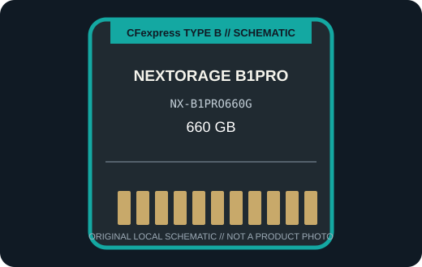

[ REMOVABLE MEDIA // PRODUCT RECORD ]
Nextorage NX-B1PRO660G CFexpress Type B 660 GB
The 660 GB NX-B1PRO660G is the middle-capacity variant in Nextorage’s VPG400-oriented B1PRO Type B family. This entry describes the removable card only; the camera or reader is separate.

MEDIA ONLY: Nextorage NX-B1PRO660G CFexpress Type B 660 GB. Capacity, interface generation, and compatibility refer to this model and not other cards in the same family.
Capacity, interface and compatibility
| Manufacturer model | NX-B1PRO660G; CFexpress 2.0 Type B, NX-B1PRO series |
|---|---|
| Nominal capacity | 660 GB. Usable space varies with formatting and system-reserved capacity. |
| Interface | PCIe 3.0 x2 and NVMe 1.4. |
| Performance | Nextorage rates the B1PRO series up to 1,950 MB/s read and 1,900 MB/s write, with 1,800 MB/s minimum sustained write across listed capacities. Those are manufacturer series ratings, not guaranteed camera throughput. |
| Host compatibility | A camera or reader that supports CFexpress Type B and the card capacity. Nextorage’s compatibility table and the camera maker’s firmware notes should be checked for the NX-B1PRO660G. |
| Write protection | No physical card-level write-protect switch is specified for this model; use host controls and verified backups. |
| Model-specific note | The B1PRO660G is one capacity in a multi-capacity family; confirm capacity and firmware support for the specific body, and do not read the 400 MB/s VPG floor as the card’s peak speed. |
Handling and preservation
No finite shelf-life or archival-life guarantee is claimed here. Keep the card clean, dry, labeled, and in its protective case; avoid touching contacts and never remove it during a write. After use, verify files and maintain multiple checksummed copies on independent media. Before a migration or recovery, record the exact card SKU, camera/reader, firmware, filesystem, and host.
Sources and standards
- Nextorage — NX-B1PRO CFexpress Type B seriesManufacturer product information for the named series or exact model; confirm SKU and host notes.
- Nextorage — B1PRO 660 GB and 1,330 GB availability noticeAdditional manufacturer detail for this model or product generation.
- CompactFlash Association — CFexpress card typesStandards reference for card form factors; not a substitute for device-specific compatibility.
- Library of Congress — Digital preservation formatsIndependent preservation planning reference for removable digital media.
Manufacturer data apply to the specific product generation shown. Standards define the format family; the camera and reader manuals govern host compatibility.